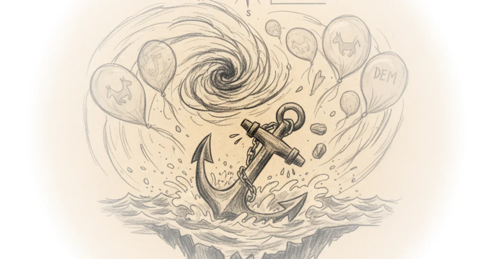

London's luxury car graveyard Michael Macleod · London Centric ·Apr 25, 2026 · 13 min read · Political Strategy
Eleventh circuit rejects roy moore's libel suit over "banned from … mall … for soliciting sex from… Various · Reason ·Apr 24, 2026 · 11 min read · Political Strategy
Lessons in combating polarization Yascha Mounk · Persuasion ·Apr 23, 2026 · 10 min read · Political Strategy
Why voters say the democrats are "weak," in their own words G. Elliott Morris · G. Elliott Morris ·Apr 23, 2026 · 15 min read · Political Strategy 
My politically homeless views Matt Yglesias · Slow Boring ·Apr 23, 2026 · 10 min read · Political Strategy
What does the end of the orbán era mean for the church? Various · The Pillar ·Apr 22, 2026 · 10 min read · Political Strategy
April 21, 2026 Heather Cox Richardson · Letters from an American ·Apr 21, 2026 · 10 min read · Political Strategy
ICE is on a $45 billion building spree. Can small towns support these new migrant warehouses? Various · Reason ·Apr 21, 2026 · 15 min read · Political Strategy
Liquidating an "empire": China's strategy to capitalise on US hegemonic strain Various · Sinification ·Apr 21, 2026 · 14 min read · Political Strategy
Easter of the dead, energy pressures, and a fracturing opposition David Smith · Moldova Matters ·Apr 21, 2026 · 10 min read · Political Strategy
Comrade the administration Cory Doctorow · Pluralistic ·Apr 20, 2026 · 19 min read · Political Strategy
The marijuana backlash is here Various · Compact Magazine ·Apr 20, 2026 · 14 min read · Political Strategy
Georgia's voting technology blunder Cory Doctorow · Pluralistic ·Apr 18, 2026 · 17 min read · Political Strategy
The US state of Virginia just ditched the electoral college. Pennsylvania should be next Dan Perry · Dan Perry ·Apr 18, 2026 · 10 min read · Political Strategy
Hasan piker is bad for the democrats Noah Smith · Noahpinion ·Apr 17, 2026 · 14 min read · Political Strategy
A fleeting return of focus report Zichen Wang · Pekingnology ·Apr 17, 2026 · 11 min read · Political Strategy
Orban was bad, even though we don't have a perfect word for his badness Scott Alexander · Astral Codex Ten ·Apr 15, 2026 · 12 min read · Political Strategy
Racket list: Congressmen with pants down Matt Taibbi · Matt Taibbi's Racket ·Apr 15, 2026 · 12 min read · Political Strategy
Exclusive poll: Michigan’s Dem Senate race is wide open, AIPAC is toxic, Hasan Piker is not Mehdi Hasan · Zeteo ·Apr 15, 2026 · 10 min read · Political Strategy
The new face of the French right Various · Compact Magazine ·Apr 14, 2026 · 16 min read · Political Strategy
A federal judge dismisses the administration’s defamation lawsuit against the Wall Street Journal Various · Reason ·Apr 13, 2026 · 10 min read · Political Strategy
Why the administration would want Pope Leo to be political Various · The Pillar ·Apr 13, 2026 · 10 min read · Political Strategy
April 12, 2026 Heather Cox Richardson · Letters from an American ·Apr 13, 2026 · 10 min read · Political Strategy
Remembering April 2009 in Moldova David Smith · Moldova Matters ·Apr 13, 2026 · 17 min read · Political Strategy
For Hungarian minorities, no good election choice Tim Mak · The Counteroffensive ·Apr 12, 2026 · 11 min read · Political Strategy
Weekend update #180: The Ukrainians stop pretending Phillips P. O'Brien · Phillips P. O'Brien ·Apr 12, 2026 · 11 min read · Political Strategy
The mystery variable that explains stubbornly low consumer sentiment G. Elliott Morris · G. Elliott Morris ·Apr 12, 2026 · 10 min read · Political Strategy
New in SpyWeek: More tulsi tumult, Iran Intel conflicts, as peace talks fizzle in Pakistan Jeff Stein · SpyTalk ·Apr 11, 2026 · 10 min read · Political Strategy